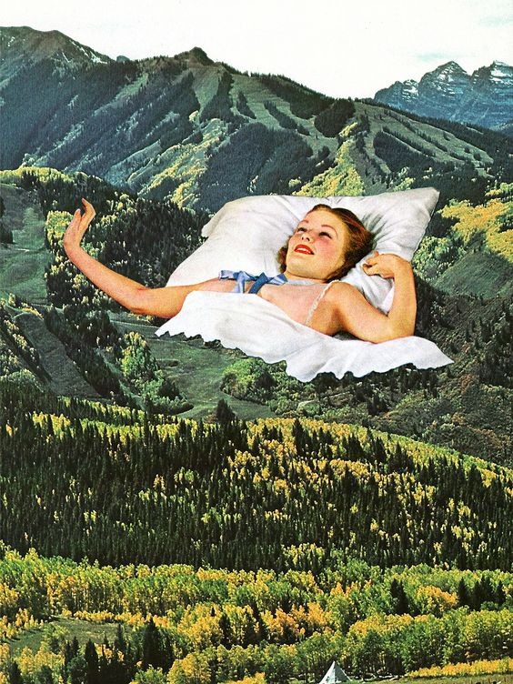
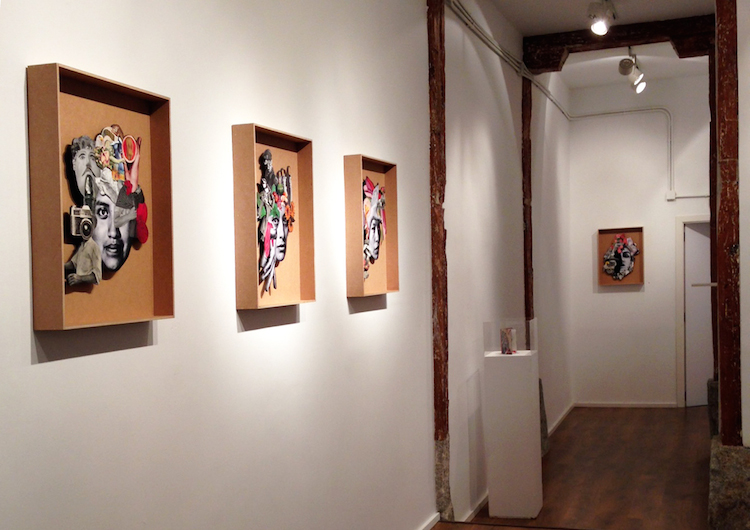
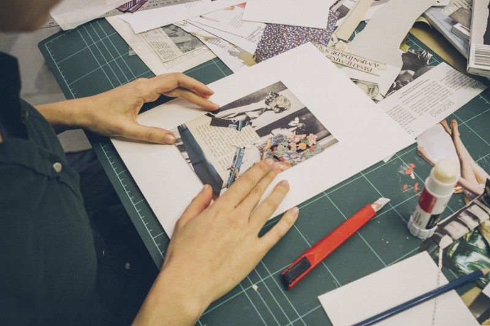

I Festival Internacional de Collage Contemporáneo
Madrid, España
Exposición - 28 de junio / 13 de agosto
Tiempo de apertura
28 de junio de 2020 → 6:00 p.m. a 11:00 p.m.
29 de junio a 4 de julio de 2020 → martes a sábado de 10:00 a.m. a 11:00 p.m., dom 4:00 p.m. a 11:00 p.m., lunes cerrado del 5 al 13 de julio de 2020 → martes a sábado a 11:00 a.m. 7pm, dom 4p.m. - 7p.m.

Programa del festival
Viernes 28 de junio
18.00 Apertura de la exposición de collage contemporáneo KAOS: Sobras / Casa de capas
21.00 Futurski ft. Tatjana Kotnik , concierto + collage en vivo / Layer House Terrace
After party @ Trainstation SubArt: Dj Ogi (Croacia), Veztax, Lilson, Prio, techno / Trainstation SubArt
Sábado 29 de junio
10.00 Bill Noir: Chaosmos , Taller / Intermedio / Adecuado para niños (5+) y adultos
12.00 Balada en cine y collage , Exposición de collages de carteles de películas y carteles de películas originales de France Štiglick / Galería En el sitio
18.30 Lula Valletta: Poesía y collage dadaísta , Taller / Interspace (14+)
21.00 Lorca, You And Me - Poesía, música y danza / Layer House Terrace
Domingo 30 de junio
18:00 Producción Laute: autor de animación infantil / Torre Škrlovec / apto para niños (5+) y adultos
18:30 Tinca Veerman: Homo Sapiens 2064 , taller / intermedio / apto para niños (5+) y adultos
20:00 Visita guiada a la exposición de la checa Petra kuratorko / Layer's House
9 pm Canciones de cuna para los soñadores , concierto de jazz / Layer's House Terrace

Lunes 1 de julio
21.00 pies futuristas Tatjana Kotnik , concierto + collage en vivo / River Captains Club
Martes 2 de julio
18.00 Eugenia Conde: Collage es la respuesta ... tarde o temprano , taller / Interspace (14+)
19.30 Open Collage de gran formato en las calles / Mergentaler Street Gallery
Miércoles 3 de julio
18.30 Marta Nerdwig: Decollage, Workshop / Space (14+)
Lunes, 8 de julio, a las 8pm → Siberian Meat Grinder, Total Kaos
Martes 13 de agosto
15.30 Collage x Serigrafía, Taller Squeegee / Layer's House
